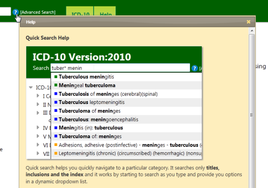
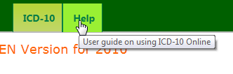
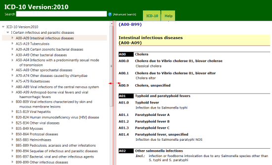

The ICD10 Online application includes context sensitive help which you may access by clicking on the icon. This icon is located in several different locations on the page and when clicked gives you information in a pop-up window. These pop-up windows can be closed by clicking on the X at the top right side of the window.
Another useful feature is the tooltip functionality. When you move your mouse on any icon or menu for a second or so, the system will give you more information on the functionality of the icon.
It is possible to resize the parts of the screen allocated to the hierarchy vs. the content using the vertical line between them
